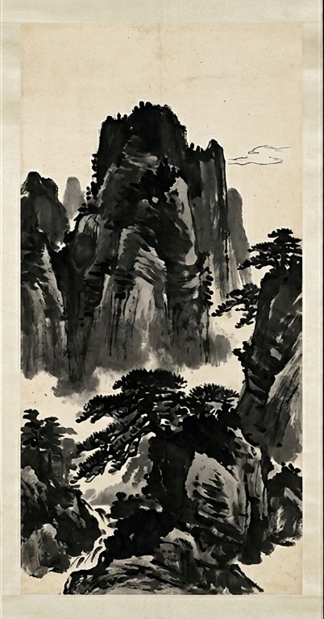
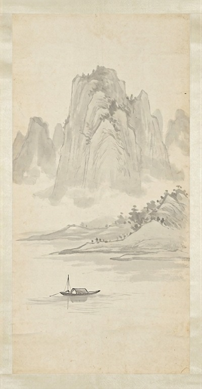
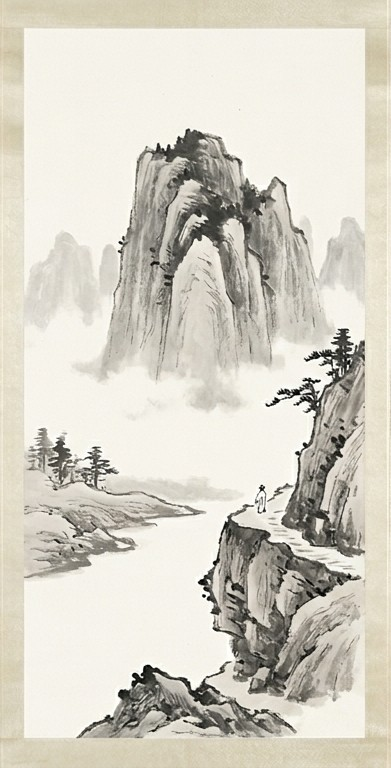

×
學生古典水墨畫作選集
學生作品集
濃墨含水量極少，墨色烏黑發亮。在構圖中多用於勾勒前景輪廓、刻畫視覺核心，強烈的黑白對比能一筆定形，賦予整體畫面穩重挺拔的視覺骨架。

this.src='https://images.unsplash.com/photo-1541701494587-cb58502866ab?auto=format&fit=crop&w=500&q=80'" class="max-w-full max-h-full object-contain cursor-zoom-in" alt="濃墨特徵" onclick="openImageModal(this.src, '濃墨特徵')">淡墨透過大量水分稀釋，呈現出豐富柔和且細膩的灰色層次。主要用於暈染遠景、鋪陳大面積的光影受光面，是營造水氣氤氳、虛實相生空間感的關鍵。

this.src='https://images.unsplash.com/photo-1518156677180-95a2893f3e9f?auto=format&fit=crop&w=500&q=80'" class="max-w-full max-h-full object-contain cursor-zoom-in" alt="淡墨特徵" onclick="openImageModal(this.src, '淡墨特徵')">留白是東方傳統美學的最高境界。紙面上的未著墨處並非空無一物，而是化作無限的空間延伸，不著一筆卻氣脈貫通，給予視覺最完美的呼吸與想像餘地。

this.src='https://images.unsplash.com/photo-1506744038136-46273834b3fb?auto=format&fit=crop&w=500&q=80'" class="max-w-full max-h-full object-contain cursor-zoom-in" alt="留白意境" onclick="openImageModal(this.src, '留白意境')">煙雨朦朧古典展廳：以下為展示之動態畫作與學生作品

學生動態作品